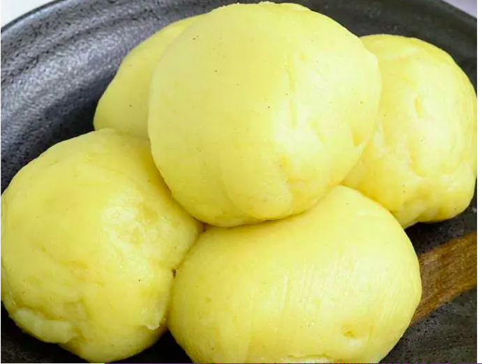
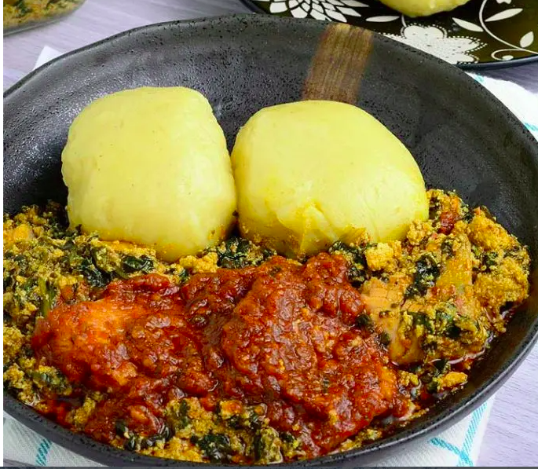

In Western and Central African cooking, fufu holds the same position as mashed potatoes do in traditional European and American cuisine. This staple dish is served with all kinds of soups, stews, and sauces, and looks like a soft, slightly elastic white purée of neutral taste. Depending on the country, the ingredients for fufu may differ. In Ghana, fufu is most commonly made by mashing together cassava and unripe plantains or yams. Fufu-like staples are widespread across the entire Sub-Saharan Africa. Apart from the ingredients mentioned earlier, they can also be prepared with cocoyams, cassava flour, maize, rice, semolina, or potato flakes, and even pre-made fufu powder which only needs to be mixed with water and cooked shortly is commonly used. Traditionally, fufu is prepared by boiling peeled cassava and pounding it with unripe plantains and some water in a large wooden mortar using a pestle. Sometimes the cassava and the plantains are pounded separately and combined in the end. As this process is lengthy — it can take up to 2 hours — and labor-intensive, it is usually done by two people — one pounding and the other kneading and turning the mixture. The modern approach suggests processing the ingredients in a food processor and then steaming them shortly while constantly whisking on a low to medium flame. Still, some people find traditional fufu preparation relaxing and perform it after a stressful week. Fufu is regularly eaten by hand. One has to tear off a small, bite-sized ball which is then dipped in soup, stew or sauce. The options are endless, but some of the favorites include groundnut, egwusi (melon), pumpkin, pepper, or okra soup; fish stew and chicken yassa.


List of ingredients
To know more about fufu, click HERE